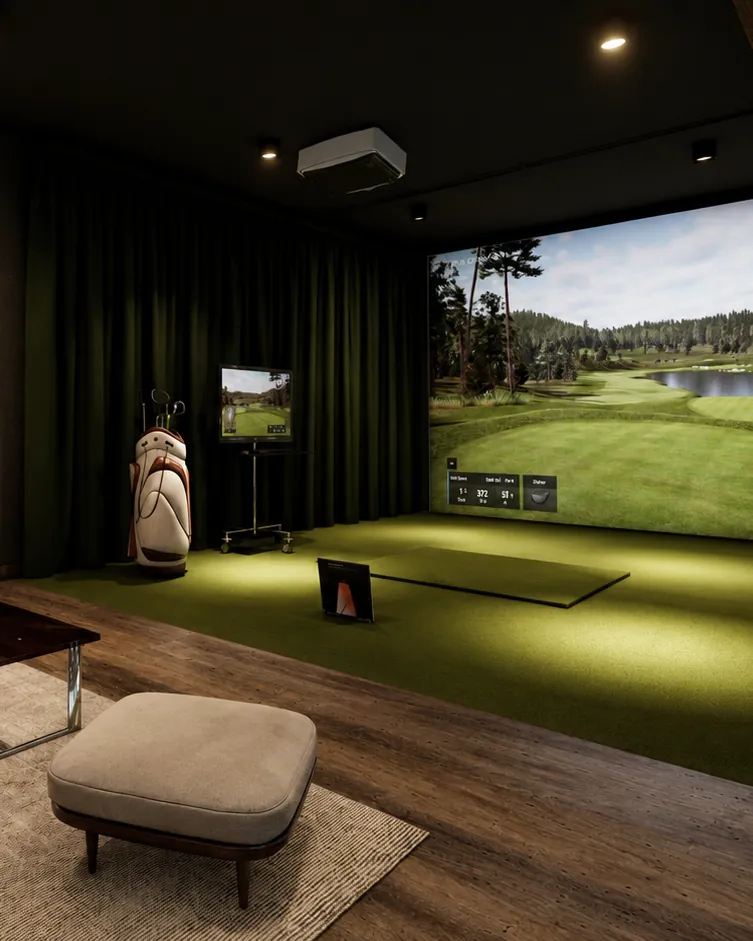
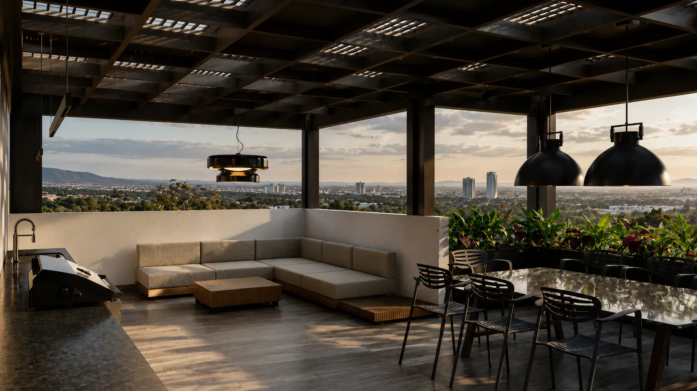
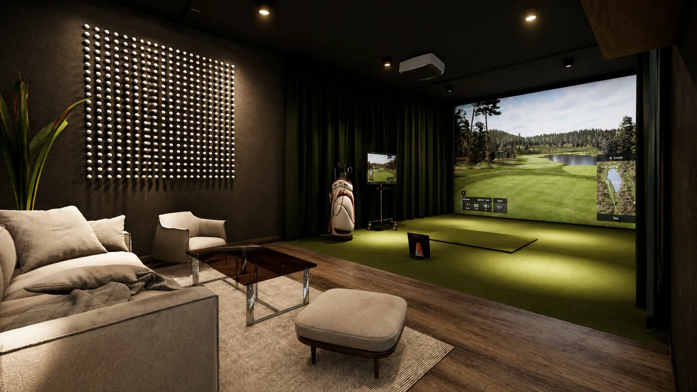
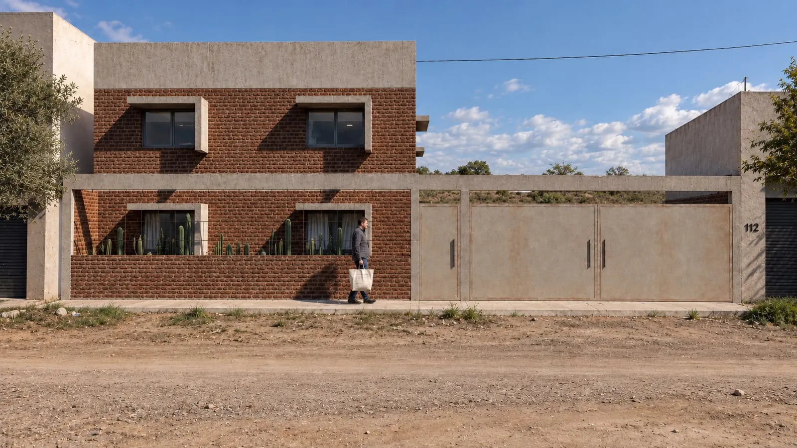

- Tipo
- Arquitectura residencial
- Ubicación
- Juriquilla, Querétaro
- Año
- 2026
- Superficie
- 270 m²
- Estado
- Propuesta conceptual
- Proceso
-
- Idea
- Transformación
- Materia
Idea
Penthouse Juriquilla nace del deseo de transformar una residencia en un espacio capaz de reflejar la personalidad, las aficiones y la forma de habitar de su propietario. Inspirado en la atmósfera de las casas club de golf, el proyecto busca trasladar su carácter cálido, elegante y social a la intimidad del hogar.
La propuesta parte de una idea central: concebir la vivienda como un refugio personal que también celebra el encuentro.
La madera se convierte en el hilo conductor del diseño, aportando continuidad visual, calidez y una elegancia discreta a los distintos ambientes. El mármol travertino introduce una expresión natural y atemporal, mientras que el acero y el vidrio acanalado complementan la composición con un lenguaje contemporáneo.
La organización espacial distingue las áreas privadas de las sociales, permitiendo que la vida cotidiana y las actividades recreativas convivan sin perder su independencia.
La terraza adquiere un papel protagonista al transformarse en una extensión habitable de la residencia. Una pérgola define el espacio de convivencia al aire libre, mientras que una habitación destinada a un simulador privado de golf incorpora una de las principales aficiones del propietario a su entorno doméstico.
Más allá de la expresión material, el proyecto busca construir una atmósfera de pertenencia. Un lugar que invita a permanecer, compartir y disfrutar, donde la exclusividad no depende de la ostentación, sino de la relación entre el espacio y quienes lo habitan.
Penthouse Juriquilla propone una interpretación contemporánea de la casa club: una arquitectura que encuentra el equilibrio entre intimidad, recreación y hospitalidad.



Proceso
Uno de los principales desafíos del proyecto fue replantear la conexión vertical entre el penthouse y su terraza. La escalera de caracol existente presentaba una circulación limitada y condiciones poco favorables para un desplazamiento cómodo y seguro.
La intervención propuso aprovechar la totalidad del cubo de escaleras para desarrollar una nueva configuración, incrementando la superficie útil de las huellas y mejorando las condiciones de circulación entre ambos niveles.
Esta decisión permitió entender la remodelación no solamente como una transformación estética, sino también como una oportunidad para mejorar la funcionalidad de la vivienda.
En la terraza, el programa se amplió para incorporar nuevas formas de recreación y convivencia. La pérgola y el espacio destinado al simulador de golf responden al carácter social del proyecto, mientras que una regadera integrada junto al baño ofrece una solución práctica para el cuidado de la mascota, evitando trasladar esta actividad a los espacios interiores.
Cada intervención responde a una manera particular de vivir: desde la seguridad de los recorridos hasta los pequeños rituales cotidianos.
Así, la arquitectura deja de limitarse a la apariencia del espacio y comienza a responder a la identidad de quien lo habita.
Ficha técnica
- Tipo
- Arquitectura residencial / Remodelación / Interiorismo
- Estado
- Propuesta conceptual no ejecutada
- Superficie
- 270 m² de intervención (180 m² interiores + 90 m² de terraza)
- Materiales
- Madera, acero, mármol travertino y vidrio acanalado.
- Imágenes
- Visualizaciones arquitectónicas digitales (renders).
- Créditos
- ARQUEMIST.

«El verdadero lujo es habitar un espacio que reconoce quién eres».
